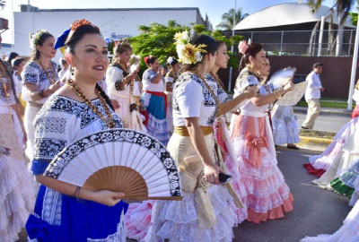

Algunos de los ingredientes y platos más característicos de
Campeche son el cazón con el que se hacen panuchos, empanadas, tamales, tacos y pan de
cazón; el pámpano en escabeche y los camarones al coco, en paté, en coctel y en
platillos calientes; el chile x´catic que se prepara con relleno de cazón y
capeado; los cangrejos, de los que se comen las patas en frío con
distintos aderezos. También hay esmedregal, raya, sierra, pulpos, calamares y
otras especies como el pámpano, que se empapela con achiote y una pizca de
cominos o se prepara en salsa verde; el calamar relleno de camarón y los tamales rellenos
de hoja de chaya y huevo cocido, envueltos en hojas de plátan
Costumbres y tradiciones
Carnaval
de Campeche: Es una de las fiestas más importantes y antiguas de
México, con más de 450 años de historia, celebrándose en
febrero. Incluye desfiles de carros alegóricos, coronación de la
Reina de Campeche y el Rey Feo, música, baile y comida tradicional.
Fiesta
de la Candelaria: Se celebra el 2 de febrero con bailes, fuegos
artificiales, juegos mecánicos, procesiones y alboradas religiosas.
Hanal
Pixán (Día de Muertos): Es una tradición ancestral donde las
familias construyen altares con ofrendas para recordar a sus seres
queridos fallecidos, incluyendo alimentos y bebidas favoritas.
Baile
de la Cabeza de Cochino: Un baile profano-religioso con trajes de
colores, giros y cintas, donde se lleva una cabeza de cochino pibil en una
mesa altar, con guirnaldas de papel de China.
Feria
de San Román: .
La
Virgen del Carmen: .
Feria
de San Francisco: .
 mujer campechana
ARTESANIAS
Las
artesanías de Campeche son variadas y ricas, reflejando la cultura maya y
la influencia colonial. Se destacan la elaboración de textiles,
como huipiles yguayaberas, la alfarería tradicional, y las artesanías con
cuerno de toro, cuero, madera, coral y conchas marinas. También se
pueden encontrar piezas hechas con palma de jipi, como sombreros y
abanicos.
Artesanías
principales:
Textiles:
Huipiles: Vestidos
bordados a mano por mujeres, con diseños geométricos y motivos de la
naturaleza.
Guayaberas: Camisas
de lino bordadas, ideales para climas cálidos.
Hamacas: Tejidas
a mano con fibras naturales, en diferentes colores y diseños.
Alfarería:
Barro
natural: Se utiliza para crear vajillas, macetas, tibores y otros
objetos ornamentales.
Torno
tradicional: Las artesanas utilizan un torno de madera para
moldear la arcilla con los pies y las manos.
Artesanías
con cuerno de toro y otros materiales:
Cuerno
de toro: Se utiliza para elaborar collares, pulseras y otros
adornos.
Cuero: Se
trabaja para crear correas, bolsos y otros artículos.
Madera: Se
talla para hacer muebles, juguetes y objetos ornamentales.
Coral
negro y naranja: Se utiliza en joyería y otros adornos.
Conchas
marinas y escamas de pescado: Se emplean para hacer collares,
pulseras y otros objetos decorativos.
Artesanías
con palma de jipi:
Sombreros: Los
sombreros de palma de jipi, conocidos como sombreros Becaleños, son muy
populares en la región.
Abanicos: Tejidos
con palma de jipi y asa de madera.
POBLACION tabla con la densidad de población masculina y femenina en Campeche: